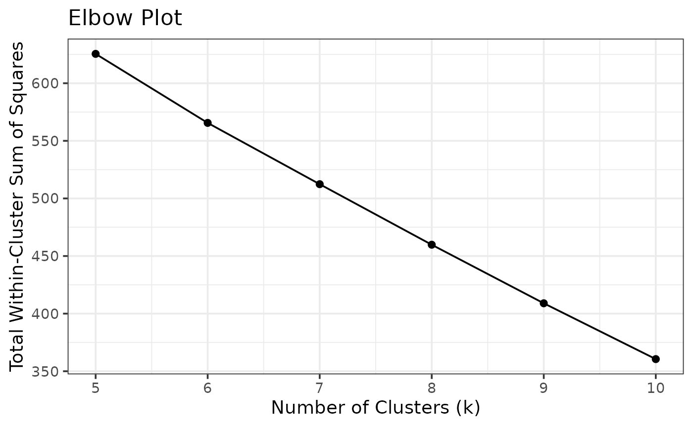

Using analysiskmeans in CLI
The analysiskmeans package can also be accessed by the command line. A few example of prompts are shown below!
To get started, if you are looking for the different commands you can use with this package, use the –help command.
analysiskmeans --helpIf you are looking to retrieve an elbow plot for various Kmeans clustering iterations, the elbow command is the one to use! Here are the following methods to use with the elbow command:
Options:
-c, --counts <COUNTS> Path to counts matrix (TSV/CSV, genes x samples)
[default: ""] [type: string]
-gm, --genemeta <GENEMETA> Path to sample gene metadata (TSV/CSV)
[default: ""] [type: string]
-cm, --cellmeta <CELLMETA> Path to sample cell metadata (TSV/CSV)
[default: ""] [type: string]
-o, --output <OUTPUT> Output directory [default: ""] [type: string]
-FALSE, --n-top <N-TOP> Number of top variable genes
[default: 50] [type: integer]
-mn, --min-k <MIN-K> Minimum K Value [default: 5] [type: integer]
-mx, --max-k <MAX-K> Number of top variable genes
[default: 10] [type: integer]If you are looking to retrieve clustering kmeans plots for various Kmeans clustering iterations, the cluster command is the one to use! Here are the following methods to use with the cluster command:
Options:
-c, --counts <COUNTS> Path to counts matrix (TSV/CSV, genes x
samples)
[default: ""] [type: string]
-gm, --genemeta <GENEMETA> Path to sample gene metadata (TSV/CSV)
[default: ""] [type: string]
-cm, --cellmeta <CELLMETA> Path to sample cell metadata (TSV/CSV)
[default: ""] [type: string]
-o, --output <OUTPUT> Output directory [default: ""] [type: string]
-FALSE, --n-top <N-TOP> Number of top variable genes
[default: 50] [type: integer]
-mn, --min-k <MIN-K> Minimum K Value [default: 5] [type: integer]
-mx, --max-k <MAX-K> Number of top variable genes
[default: 10] [type: integer]
-mx, --selected-k <SELECTED-K> A Selected K Value for Plotting
[default: 7] [type: integer]Let’s get started with a few examples!
Firstly, let’s install analysiskmeans. Also, read_data_file is a helper function to load in a dataset in a csv/tsv format
read_data_file <- function(path) {
ext <- tolower(tools::file_ext(path))
if (ext == "csv") {
utils::read.csv(path, row.names = 1, check.names = FALSE)
} else {
utils::read.table(path, sep = "\t", header = TRUE, row.names = 1,
check.names = FALSE)
}
}The following example starts by constructing input files!
set.seed(42)
num_genes <- 100
num_cells <- 20 #Used to be 8
raw_counts <- as.integer(rexp(num_genes*num_cells, rate = 0.1))
raw_counts <- matrix(raw_counts, nrow = num_genes, ncol = num_cells)
gene_metadata <- data.frame(
name = paste("Gene", 1:num_genes, sep = "_"),
length = as.integer(rnorm(num_genes, mean = 10000, sd = 500))
)
cell_metadata <- data.frame(
names = paste("Cell", 1:num_cells, sep = "_"),
batch = rep(1:2, each = num_cells/2),
label = rep(c("xylem", "phloem"), times = num_cells/2)
)We can continue by writing the inputs into files in a tests/cli folder!
#reading the files and beginning the CLI simulation
#Due to the vignette structure
counts_df <- read_data_file(paste(dirname(getwd()),"/tests/cli/counts_df.csv", sep = ""))
genemeta_df <- read_data_file(paste(dirname(getwd()),"/tests/cli/genemeta_df.csv", sep = ""))
cellmeta_df <- read_data_file(paste(dirname(getwd()),"/tests/cli/cellmeta_df.csv", sep = ""))Next, we can make an SingleCellExperiment object with the dataframes from the files!
sce1 <- SingleCellExperiment(
assays = list(counts = as.matrix(counts_df)),
rowData = genemeta_df,
colData = cellmeta_df
)After the file is fetched, and the object is saved, we can run our functions and start conducting the analysis! We can start by using the elbow plot function! We are also saving our elbow plot in an image in our repository.
results <- analysiskmeans::data_config(sce1)## Warning in .library_size_factors(assay(x, assay.type), ...): 'librarySizeFactors' is deprecated.
## Use 'scrapper::centerSizeFactors' instead.
## See help("Deprecated")## Warning in .local(x, ...): 'normalizeCounts' is deprecated.
## Use 'scrapper::normalizeCounts' instead.
## See help("Deprecated")
sce1 <- results$sce
mat_norm <- analysiskmeans::top_x_genes(sce1, n_top = 50)
pca <- analysiskmeans::computepca(mat_norm)
max_k <- 10
min_k = 5
outputs <- analysiskmeans::k_means(min_k = min_k, max_k=max_k, pca = pca)
metrics<-outputs$metrics
plot1 <- analysiskmeans::elbow_plot(metrics)